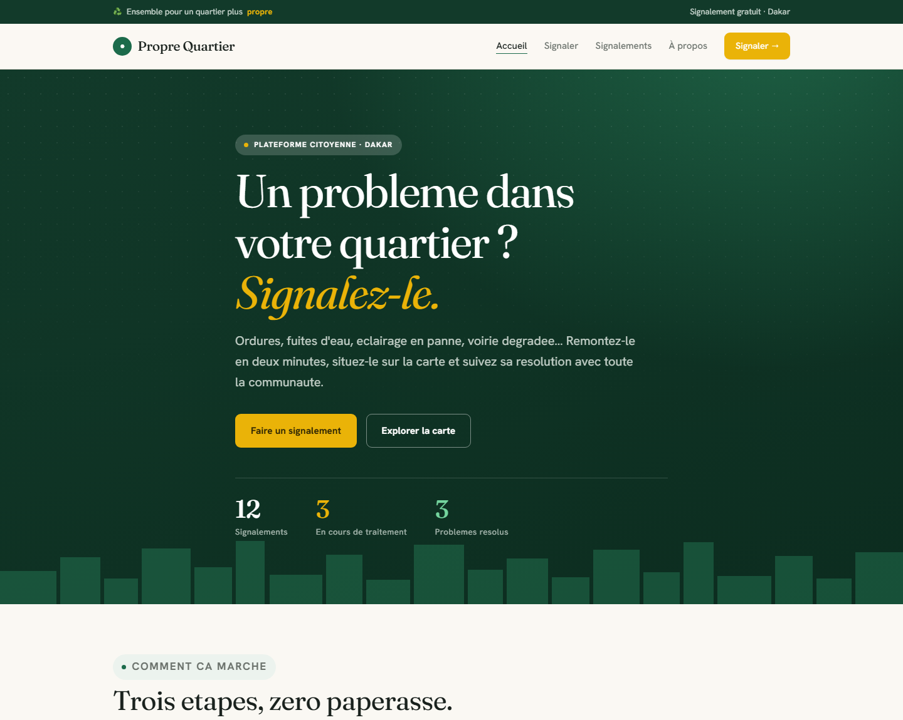
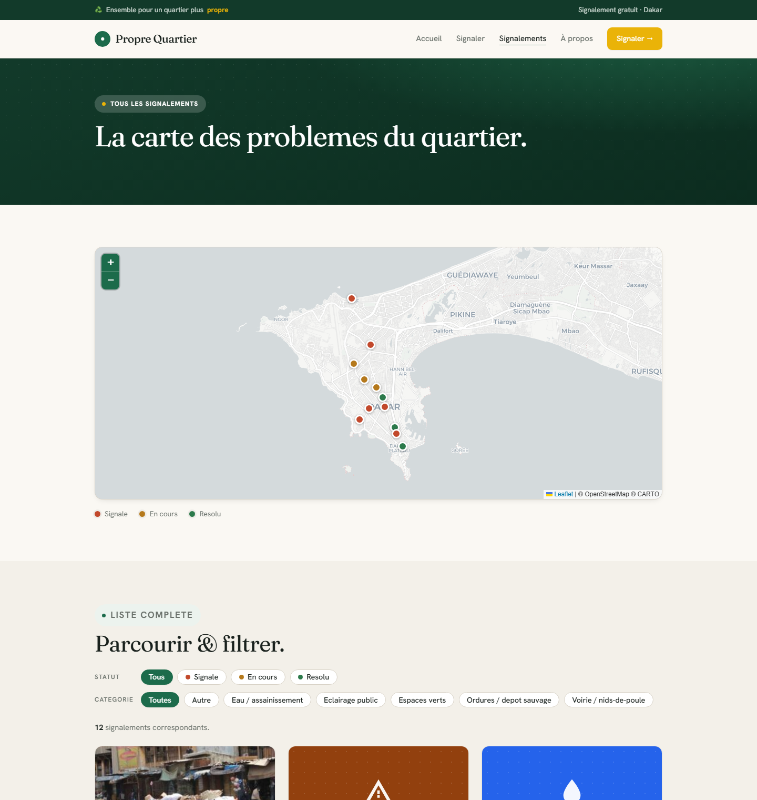
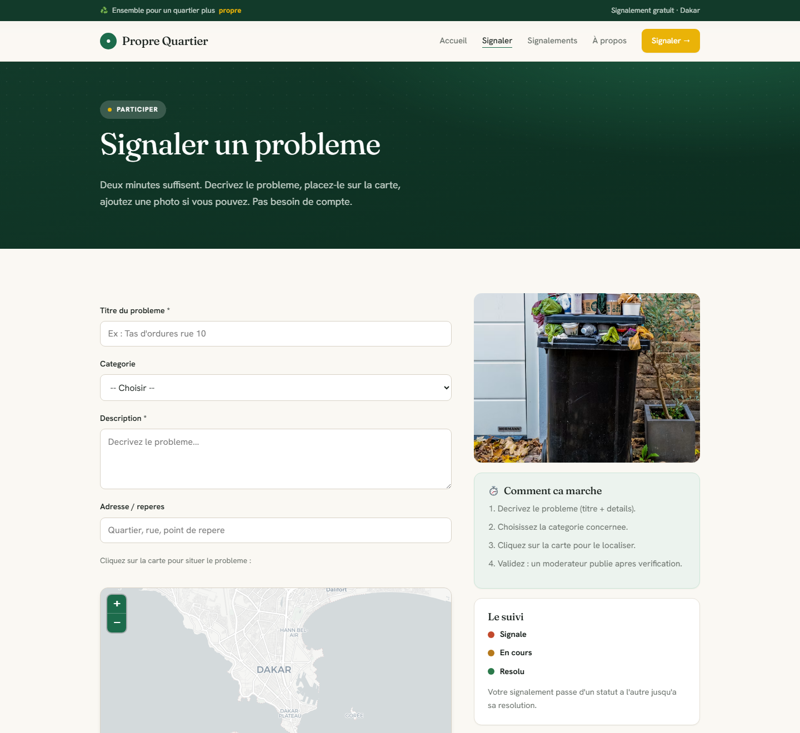
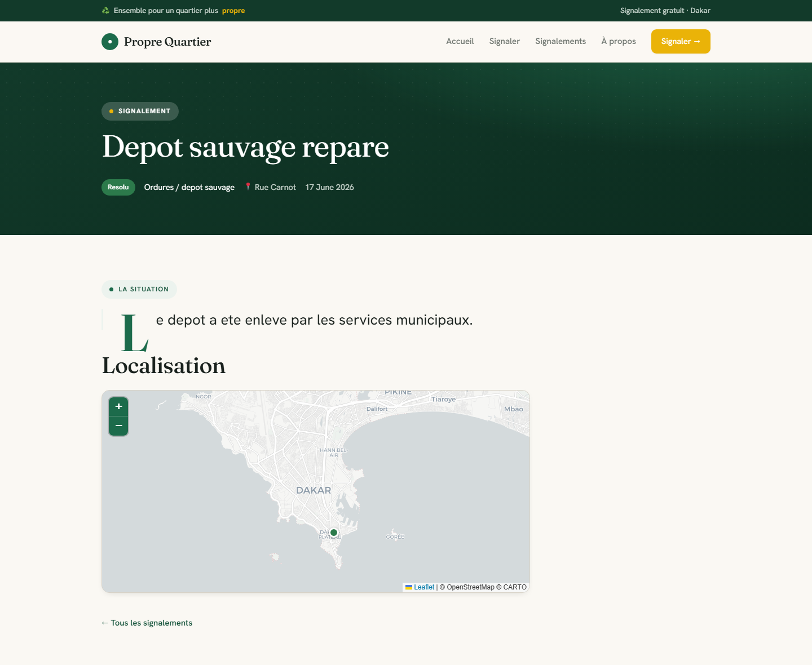
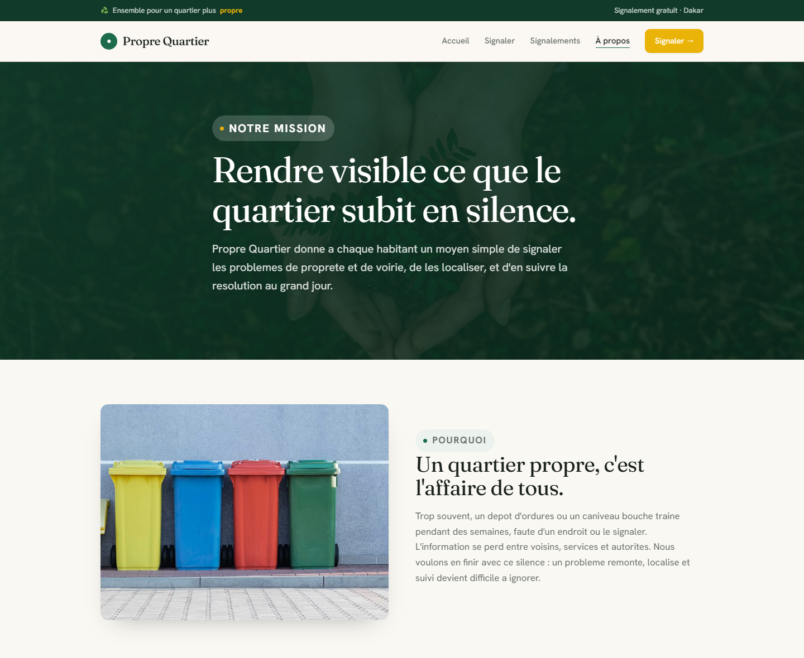

Plateforme citoyenne de signalement des problèmes de propreté et de voirie — conçue sous WordPress, conteneurisée avec Docker.
Ce rapport présente Propre Quartier, une plateforme web réalisée dans le cadre du projet IDA — Introduction au Développement d'Applications.
Le cahier des charges demandait d'identifier un besoin réel au sein de notre communauté, de choisir un CMS/LMS adapté, de mettre en place le site et de l'héberger sur une plateforme gratuite. Plutôt qu'un simple site vitrine, nous avons choisi de construire un outil de civic-tech utile : permettre aux habitants d'un quartier de signaler les problèmes de propreté et de voirie, de les localiser sur une carte et d'en suivre la résolution.
Le projet a été développé autour du système de gestion de contenu WordPress, étendu par un thème enfant et un plugin métier entièrement codés par l'équipe, et conteneurisé avec Docker pour garantir une installation reproductible.

Dans de nombreux quartiers, un dépôt d'ordures, un caniveau bouché ou un lampadaire en panne peut subsister pendant des semaines, faute d'un moyen simple de le signaler et d'en garder la trace. L'information se perd entre les habitants, les services techniques et les autorités locales.
Nous sommes partis d'un constat simple : rendre un problème visible, localisé et suivi, c'est déjà la première étape pour le résoudre. Propre Quartier répond à ce besoin avec trois promesses :
Le choix du CMS étant un critère de notation, nous l'avons argumenté. WordPress s'est imposé comme le meilleur compromis pour un portail communautaire multi-rubriques.
| Critère | WordPress | Moodle (LMS) | Drupal |
|---|---|---|---|
| Portail multi-rubriques | Excellent (natif) | Pensé « cours » | Bon mais complexe |
| Personnalisation | Thème + plugin sur mesure | Rigide | Puissant, courbe raide |
| Hébergement gratuit | Très facile | Lourd | Exigeant |
| Écosystème / communauté | Immense | Spécialisé | Moyen |
| Courbe d'apprentissage | Douce | Moyenne | Raide |
Nous retenons WordPress. Moodle n'aurait été pertinent que pour un besoin de cours en ligne notés — ce qui n'est pas notre cas. WordPress nous permet à la fois un rendu soigné et un vrai travail de développement (type de contenu dédié, cartographie, formulaire public), ce qui maximise le critère « niveau de personnalisation ».
L'application est entièrement conteneurisée. Un fichier
docker-compose.yml orchestre quatre services, et un script d'installation
(install.sh via WP-CLI) rend le déploiement reproductible : activation du thème et du
plugin, création des pages, du menu, des catégories et de données de démonstration.
Le code écrit par l'équipe est versionné et monté dans le conteneur (thème + plugin), tandis que le cœur de WordPress et la base vivent dans des volumes Docker. Cette séparation garantit que les contributions des habitants ne sont pas perdues, même si l'on change de thème.
L'objet central est le Signalement, implémenté comme un
type de contenu personnalisé (Custom Post Type) WordPress. La logique de données vit dans
le plugin propre-quartier-core, pas dans le thème.
| Élément | Type WordPress | Rôle |
|---|---|---|
| Signalement | Custom Post Type | Titre + description du problème |
| Catégorie de problème | Taxonomie | Ordures, eau, éclairage, voirie, espaces verts… |
| Latitude / Longitude | Métadonnées (post meta) | Localisation sur la carte |
| Adresse | Métadonnée | Repère textuel |
| Statut | Métadonnée | Signalé · En cours · Résolu |
Toutes ces données sont stockées dans MariaDB (tables wp_posts,
wp_postmeta, wp_terms). Chaque envoi de formulaire est une insertion en
base ; chaque affichage de la carte est une requête de lecture.


Le problème vient d'être publié et attend une prise en charge.
Il est pris en compte : une intervention est en route.
C'est réglé ; le signalement reste visible comme preuve d'action.

Le projet ne se limite pas à de la configuration : il comporte un véritable développement.
propre-quartier-core[pq_carte], [pq_formulaire], [pq_signalements].
Sécurité. Le formulaire public est protégé par des nonces, les contributions passent par une modération, et toutes les entrées sont assainies et échappées.
SEO. Chaque page expose une balise title, une méta description, des
balises Open Graph et Twitter Card, ainsi que des données structurées
schema.org (le site comme WebSite/Organization, chaque
signalement comme Report géolocalisé). Le plan du site XML natif de WordPress est actif.
Deux voies sont possibles : exécuter le docker-compose sur un serveur, ou héberger
le site sur une plateforme WordPress gratuite. Pour respecter la contrainte « host gratuit », nous
avons retenu la seconde, à l'aide d'une migration « tout-en-un » : un seul fichier
.wpress contenant la base, le thème, le plugin et le contenu, importé sur un
hébergeur gratuit (type InfinityFree).
Étapes réalisées : export du fichier .wpress depuis
l'administration locale avec All-in-One WP Migration → création d'un compte gratuit InfinityFree →
création du domaine propre-quartier.freedev.app → installation de WordPress avec le
Script Installer / Softaculous → installation du plugin All-in-One WP Migration sur le site en ligne
→ import du fichier .wpress, qui transfère la base, le thème, le plugin, les pages et
les signalements.
Après l'import, les permaliens ont été régénérés depuis Réglages → Permaliens → Enregistrer. Le site public a ensuite été vérifié : page d'accueil, menu, carte et signalements sont visibles en ligne.
Adresse : https://propre-quartier.freedev.app/wp-admin
Identifiant : admin · Mot de passe : admin_pq_2025
Lorsqu'un habitant envoie le formulaire, le signalement est créé en « En attente » et n'est pas encore visible sur le site. Pour le rendre public, il faut se connecter à l'administration → menu Signalements → ouvrir le signalement → cliquer sur Publier. Le statut (Signalé / En cours / Résolu) se règle ensuite dans le panneau « Détails du signalement ». Ce circuit de modération protège le site du spam.
Le travail a été réparti entre les trois membres du groupe selon les domaines de compétence, avec une relecture croisée du code et des contenus.
| Membre | Rôle principal | Contributions |
|---|---|---|
| Salif Biaye | Chef de projet · Back-end & DevOps | Conception générale, plugin métier (CPT, métadonnées, formulaire, modération), conteneurisation Docker, script d'installation, déploiement. |
| Abdallah Moussa Diallo | Front-end & Design | Thème enfant, gabarits, identité visuelle, intégration de la cartographie Leaflet, responsive, galerie d'images. |
| Abdoulaye Diaw | Contenu · UX · Qualité | Pages et contenus, SEO et données structurées, filtres et pagination, tests fonctionnels, rédaction du rapport. |
Cette répartition est indicative et peut être ajustée selon la contribution réelle de chacun.
| Difficulté | Solution apportée |
|---|---|
| Double en-tête avec le thème par blocs | Passage à des gabarits classiques pour un contrôle total du rendu. |
| Filtrer sans alourdir avec du JavaScript | Filtrage et pagination 100 % côté serveur via pre_get_posts et des paramètres d'URL. |
| Conserver l'utilisateur dans la liste après filtrage | Ancre #liste ajoutée aux liens de filtres et de pagination. |
| Grille terne sans photos | Illustrations vectorielles par catégorie, en repli des photos. |
Propre Quartier répond aux quatre exigences du cahier des charges : un besoin communautaire réel et original, un CMS adapté et justifié, un site complet et personnalisé, et une mise en ligne sur un hébergeur gratuit. Au-delà de la simple configuration, le projet démontre une maîtrise du CMS à travers un plugin et un thème développés sur mesure.
Perspectives. Le projet pourrait évoluer vers : des notifications aux services concernés, un espace statistique public (nombre de problèmes résolus par zone), une application mobile, ou l'ouverture des données (open data) pour les collectivités.
Un quartier plus propre commence par un signalement — et Propre Quartier rend ce geste simple, visible et suivi.